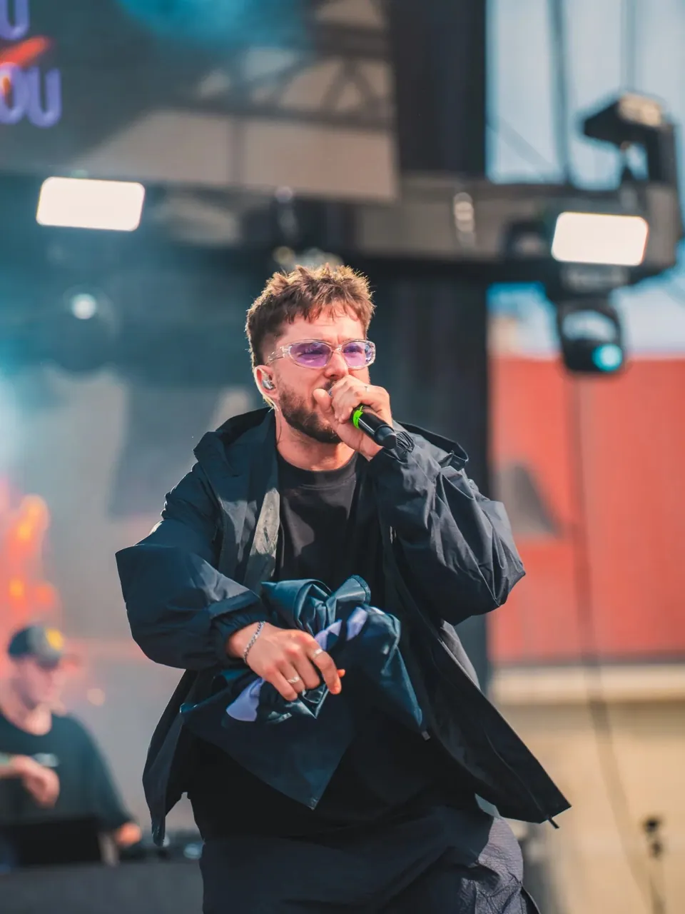
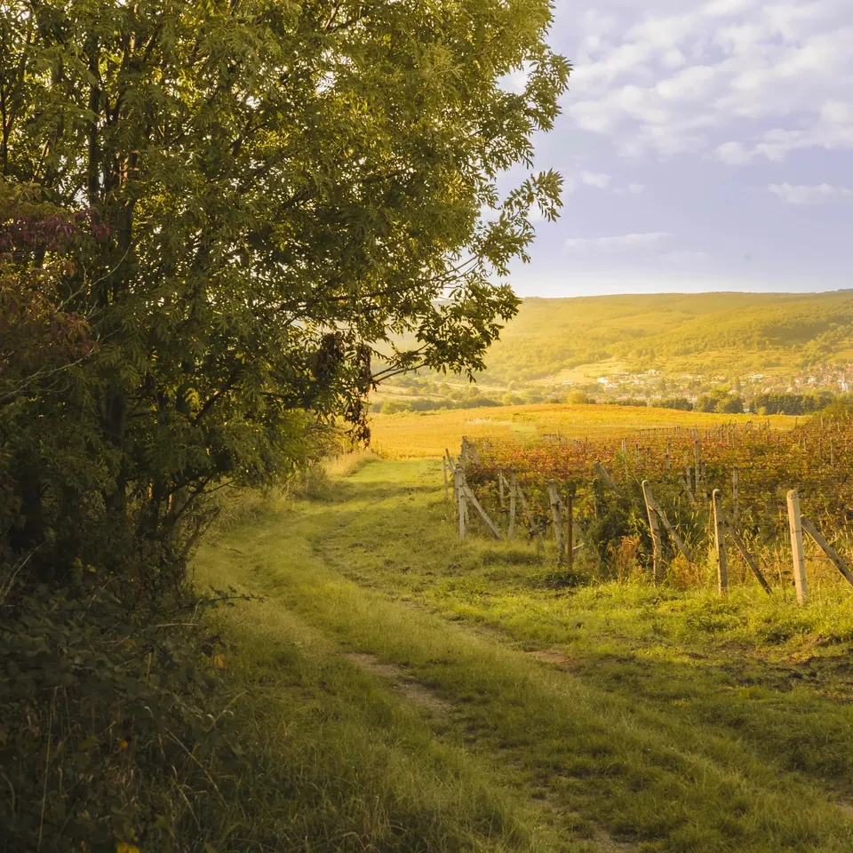

Jaromír Marek
Fotograf z Trnavy. Eventy, portréty a príroda.

Eventy
Svadby, stužkové, birmovky, koncerty a festivaly. Na týchto fotkách: Festival Lumen, stužková a birmovka v Leopoldove.


Portréty
Portrétne focenie, najradšej vonku v dennom svetle. Na obálke je portrét pri západe slnka, tu je spevák z Festivalu Lumen.
TODO: ďalšie portréty od Jara


Príroda a mesto
Slovenská krajina, skaly a výhľady, domáca Trnava. Tu: Súľovské skaly, Kalvária v Banskej Štiavnici a večerné centrum Trnavy.



TODO: ďalšie fotky z Instagramu a originály od Jara
O mne
Fotím eventy, portréty a prírodu. Som z Trnavy a s foťákom ma nájdete na svadbách, stužkových, festivaloch aj na výletoch po Slovensku.
TODO: vlastný text o sebe od Jara TODO: portrét Jara TODO: cenník alebo „cena dohodou“
Dohodnime si focenie
Napíšte mi na Instagram (@jarofotos): o aký typ focenia ide, kedy a kde.
Napísať na Instagram Profil @jarofotos
TODO: e-mail TODO: telefón